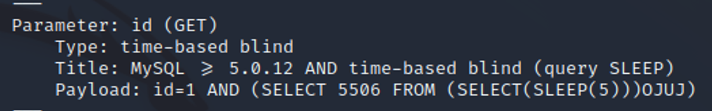

February 3, 2023
Precious
Tools Needed: Nmap, Gobuster, Burp Suite, SQLmap, and Linpeas
Step 1: Start off with an Nmap Scan
nmap -sV -sC <IP ADDRESS> -oA <FILE NAME>
Add "soccer" to the /etc/hosts file. This is a very common step for Hack The Box and will save you some headaches later.
In the Nmap scan, we found that port 80 is open. This likely means there’s a website. When visiting http://soccer.htb, we see a landing page. Let’s click around for anything interesting while our Gobuster scans are running.
When a CTF challenge has a website, I immediately think “Gobuster and Burp Suite.”
Gobuster is great for enumerating a website. It allows us to scan for potential directories (e.g., www.<WEBSITE>.com/dev) and virtual hosts like dev.<WEBSITE>.com.
Here’s the command to scan for directories:
gobuster dir -u http://soccer.htb/ -w /usr/share/wordlists/dirbuster/directory-list-2.3-medium.txt
This command scans for virtual hosts:
gobuster vhost -u http://soccer.htb/ -w /usr/share/seclists/Discovery/DNS/subdomains-top1million-5000.txt --append-domain
No results with the vhost scan, but we find one directory with the first Gobuster scan!
Let’s head over to http://soccer.htb/tiny/.
We're greeted with a login page. Try common credentials like admin/admin, or check if the page references a known service.
The site uses Tiny File Manager. We can search online to find default credentials.
https://github.com/prasathmani/tinyfilemanager
We found default credentials on their GitHub.
Both sets of default creds work!
Logging in with user/12345
Logging in with admin/admin@123
Looks like we can upload and edit files with the admin account. Let’s upload a PHP reverse shell to gain access.
I used this one from Pentestmonkey:
php-reverse-shell.php
Replace the IP with your HTB VPN IP and the port with one you want to listen on.
Start a Netcat listener and invoke the shell by opening the uploaded PHP file. The shell should catch.
We’re in!
Let’s upgrade our shell using Python:
python3 -c 'import pty; pty.spawn("/bin/bash")'
This gives us a much better shell to work with.
Looking around, we find another host added to /etc/hosts.
This subdomain is also referenced in /etc/nginx. It wasn’t found by Gobuster (since it wasn't in our wordlist). Add it to your /etc/hosts and try visiting it.
This new page has a login screen with a sign-up option. Try signing up. HTB usually doesn’t require email verification—just remember your credentials!
The site doesn’t reveal much. One element can be interacted with, but it’s unclear what it does.
Open the page in Burp Suite and capture the request to inspect traffic.
We see a “Switching Protocols” response and a WebSocket payload. There’s a lot of WebSocket activity.
You can also right-click and view page source. In this case, we confirm it uses the ws protocol (WebSocket), not wss (WebSocket Secure), which is wild!
Let’s try an injection. I don’t know much about WebSocket injections, so I Googled and found:
They’ve provided code to exploit a Docker container, and here’s the write-up:
Blind SQLi Over WebSocket - Automation
The payload uses JSON input—just like the soccer website’s request. We can modify it accordingly and use SQLmap for automated injection.
SQLmap is a great tool. Here’s a tutorial I followed to learn the syntax:
SQLmap tutorial – GeeksforGeeks

SQLmap found something extremely useful:
I was able to retrieve the names of databases one character at a time with a delay. This part requires time and patience.